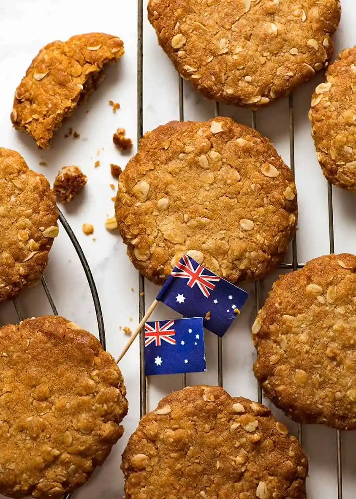

|  |
|
Preheat oven to 170C. Place the flour , oats , sugar and coconut in a large bowl and stir to combine.
n a small saucepan place the golden syrup and butter and stir over low heat until the butter has fully melted. Mix the bicarb soda with 1 1/2 tablespoons water and add to the golden syrup mixture. It will bubble whilst you are stirring together so remove from the heat.
Pour into the dry ingredients and mix together until fully combined. Roll tablespoonfuls of mixture into balls and place on baking trays lined with non stick baking paper, pressing down on the tops to flatten slightly.
Bake for 12 minutes or until golden brown.